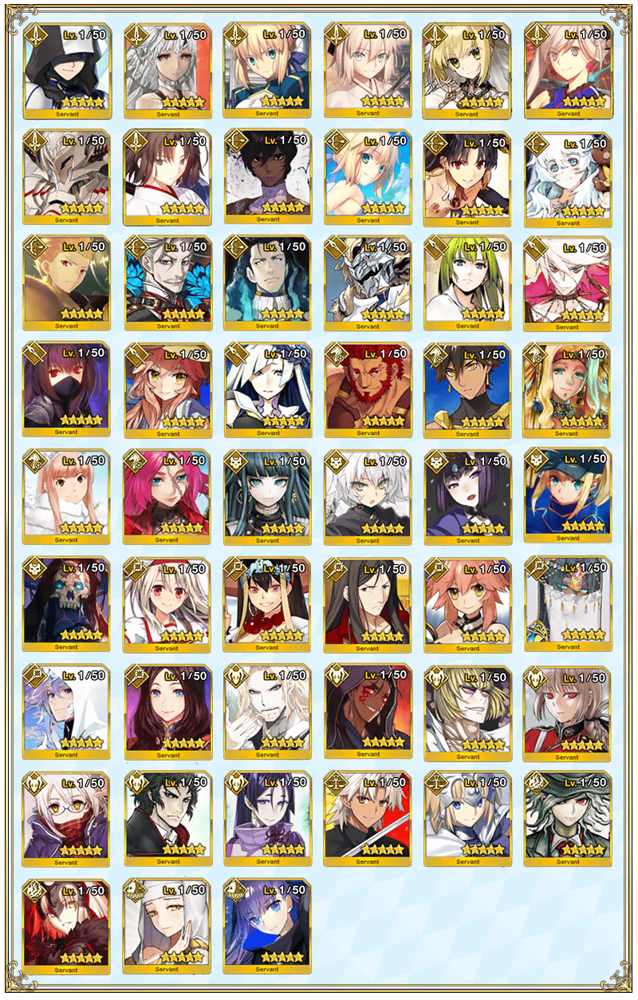

◆「Fate/Grand Order Fes. 2017 ～2nd Anniversary～福袋召喚」期間◆
期間:2017年7月30日(日) 12:10～8月9日(三) 11:598月16日(三) 11:59
※延長舉辦期間。
※遊戲內的顯示中會有結束時間未變更的情況。
將會依序對應。
※(8/7修正)
以期間限定舉辦「Fate/Grand Order Fes. 2017 ～2nd Anniversary～福袋召喚」！
福袋召喚為確定1位★5(SSR)Servant的10次召喚！
期間限定概念禮裝「★5(SSR)カルデア･アニバーサリー」「★4(SR)アフタヌーン･パーティー」「★3(R)スターライト･フェスト」也會出現！
※一人只限1次。
※可以用有償聖晶石30個召喚。無法用無償聖晶石召喚。
※聖晶石購入時給予的「附贈(オマケ)」為無償聖晶石。
由於不包含在有償聖晶石的個數，請注意別搞錯。
另外，所持聖晶石的詳細，可從所持道具一覧確認。
詳情請在聖晶石召喚畫面左下的召喚詳細確認。
確定1位★5(SSR)Servant、確定★4(SR)以上1張、確定1位★3(R)以上的Servant！
※確定★4(SR)以上包含Servant和概念禮裝。
◆「Fate/Grand Order Fes. 2017 ～2nd Anniversary～福袋召喚」對象★5(SSR)Servant◆
| 職階 | 稀有度 | 名稱 |
|---|---|---|
| Saber | ★★★★★ | 亞瑟・潘德拉剛〔Prototype〕 |
| Saber | ★★★★★ | 阿提拉 |
| Saber | ★★★★★ | 阿爾托莉亞・潘德拉剛 |
| Saber | ★★★★★ | 沖田總司 |
| Saber | ★★★★★ | 尼祿・克勞狄烏斯〔Bride〕 |
| Saber | ★★★★★ | 宮本武藏 |
| Saber | ★★★★★ | 莫德雷德 |
| Saber | ★★★★★ | 兩儀式 |
| Archer | ★★★★★ | 阿周那 |
| Archer | ★★★★★ | 阿爾托莉亞・潘德拉剛 |
| Archer | ★★★★★ | 伊絲塔 |
| Archer | ★★★★★ | 俄里翁 |
| Archer | ★★★★★ | 吉爾伽美什 |
| Archer | ★★★★★ | 新宿的Archer |
| Archer | ★★★★★ | 尼古拉・特斯拉 |
| Lancer | ★★★★★ | 阿爾托莉亞・潘德拉剛 |
| Lancer | ★★★★★ | 恩奇杜 |
| Lancer | ★★★★★ | 迦爾納 |
| Lancer | ★★★★★ | 斯卡哈 |
| Lancer | ★★★★★ | 玉藻前 |
| Lancer | ★★★★★ | 布倫希爾德 |
| Rider | ★★★★★ | 伊斯坎達爾 |
| Rider | ★★★★★ | 奧茲曼迪亞斯 |
| Rider | ★★★★★ | 魁札爾・科亞特爾 |
| Rider | ★★★★★ | 女王梅芙 |
| Rider | ★★★★★ | 弗朗西斯・德雷克 |
| Assassin | ★★★★★ | 克麗奧佩脫拉 |
| Assassin | ★★★★★ | 開膛手傑克 |
| Assassin | ★★★★★ | 酒呑童子 |
| Assassin | ★★★★★ | 謎之女主角X |
| Assassin | ★★★★★ | “山之翁” |
| Caster | ★★★★★ | 伊莉雅絲菲爾・馮・愛因茲貝倫 |
| Caster | ★★★★★ | 玄奘三藏 |
| Caster | ★★★★★ | 諸葛孔明〔埃爾梅羅II世〕 |
| Caster | ★★★★★ | 玉藻前 |
| Caster | ★★★★★ | 不夜城的Caster |
| Caster | ★★★★★ | 梅林 |
| Caster | ★★★★★ | 李奧納多・達文西 |
| Berserker | ★★★★★ | 弗拉德三世 |
| Berserker | ★★★★★ | 庫・夫林〔Alter〕 |
| Berserker | ★★★★★ | 坂田金時 |
| Berserker | ★★★★★ | 南丁格爾 |
| Berserker | ★★★★★ | 謎之女主角X〔Alter〕 |
| Berserker | ★★★★★ | 土方歳三 |
| Berserker | ★★★★★ | 源頼光 |
| Ruler | ★★★★★ | 天草四郎 |
| Ruler | ★★★★★ | 貞德 |
| Avenger | ★★★★★ | 巖窟王 |
| Avenger | ★★★★★ | 貞德〔Alter〕 |
| Alterego | ★★★★★ | 殺生院祈荒 |
| Alterego | ★★★★★ | Meltlilith |

※★5(SSR)阿爾托莉亞・潘德拉剛(Archer)及★5(SSR)玉藻前(Lancer)的語音追加到語音清單的條件為必須通過2017年7月12日(三) 20:00～7月29日(六) 22:59期間舉辦的「復刻:夏日! 大海! 開拓! FGO 2016 Summer 迦勒底夏日回憶 ～療癒白沙灘～ 輕量版」的主線關卡「第二節」。
請注意「Fate/Grand Order Fes. 2017 ～2nd Anniversary～福袋召喚」中，不管新獲得哪個Servant，在未通過指定的主線關卡的話不會開放語音清單的語音。